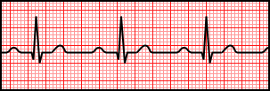
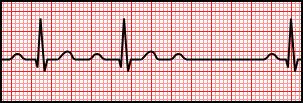
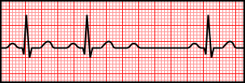
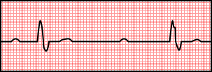
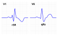
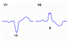
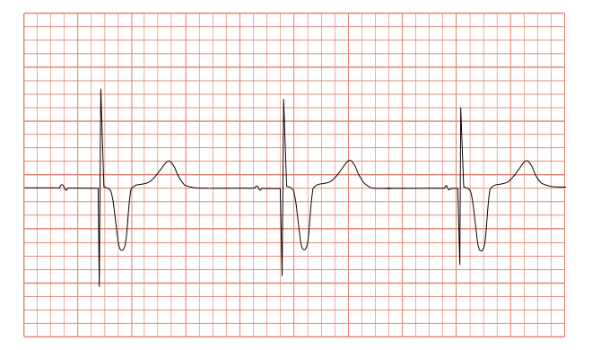

訊號在傳導路徑上的任何一站都可能被延遲或擋住。這一章教你怎麼用「梯形圖」的概念看懂三種房室傳導阻滯的差異，以及束支傳導阻滯、節律器心電圖的基本辨識。
房室傳導阻滯依嚴重程度分成一度、二度（又分兩型）、三度。最有效的理解方式是看每個 P 波是否成功「連線」到後面的 QRS：




| 類型 | English | 關鍵特徵 |
|---|---|---|
| 一度AV阻滯 | First-degree AV block | PR間期延長（>0.20秒），但每個P波都成功傳導，不漏拍 |
| 二度AV阻滯 Mobitz I | Second-degree, Mobitz type I (Wenckebach) | PR間期逐漸拉長，直到某一拍完全不傳導（漏拍），之後循環重來 |
| 二度AV阻滯 Mobitz II | Second-degree, Mobitz type II | PR間期固定不變，卻毫無預警地突然漏拍，較危險 |
| 三度（完全）AV阻滯 | Third-degree (complete) AV block | P波與QRS完全各自獨立、互不相關，各自有自己的規則速率 |
Mobitz I 通常是良性、可逆的（常見於藥物影響或迷走神經張力過高，阻滯位置多在房室結本身），觀察即可，不一定要裝節律器。Mobitz II 因為毫無預警地漏拍，且阻滯位置通常在希氏束以下（infranodal），有較高機率突然惡化成三度阻滯，臨床上通常會積極評估是否需要裝置節律器。分清楚這兩型的臨床意義差異，是這一節最重要的重點。
回顧第1章的備援機制：三度阻滯時心房與心室的訊號完全斷開，但心室不會因此停止跳動——房室結以下的組織（交界區或浦金氏纖維）會啟動自己的脫逸心律（escape rhythm），以較慢但規則的速率獨立跳動，維持心臟基本的血液輸出。這正是第1章「自動節律性是心臟備援系統」這個觀念的臨床實例。
訊號到達希氏束之後，如果左束支或右束支其中一條「路」被阻斷，訊號仍能透過另一側先傳導、再繞道傳到被阻斷那一側，導致兩側心室無法同步收縮，QRS寬度延長（>0.12秒），但整體規律性通常不受影響。


人工節律器會在該收縮的時間點發出一個人工電刺激，心電圖上會看到一個又細又高的垂直「節律器尖波（pacer spike）」，緊接著才是被刺激誘發出來的寬大QRS（因為電流從心室某一點人工植入的電極開始擴散，不是走正常傳導路徑，形狀類似人工造成的束支傳導阻滯樣式）。看到規則出現的節律器尖波＋接續的寬QRS，就能判斷病人裝有心室節律器並正在運作。

束支傳導阻滯與心室性心律不整（第5章）的QRS都會寬大，很容易混淆。關鍵鑑別：束支傳導阻滯每個QRS前面都有正常對應的P波（房室關係正常，只是心室內傳導異常）；心室性心律不整（如PVC、VT）則沒有相對應的正常P波。看到寬QRS，先確認前面有沒有正常P波，是重要的第一步。